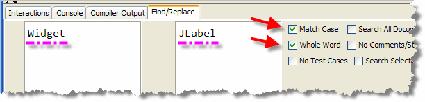
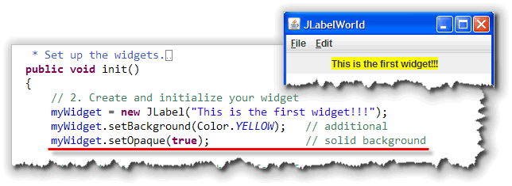
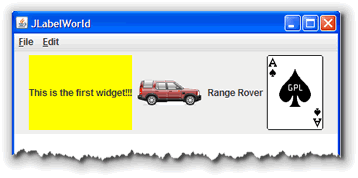

In Section 8.5—Meet
the Widgets, you learned the theory behind
Java's Widget library called Swing. But, as I mentioned in
the lesson, there
is no real Widget class. Now that you've
seen the pattern, though, you can apply it to the first,
and one of the simplest, of the real JFC core components,
the JLabel.
Before you start this assignment, make sure you have read Section 8.5—Meet the Widgets.
Swing Widgets—JLabelWorld

The JLabel class defines a set of objects that:
- can hold a single line of text.
- know how to display themselves
- can be positioned and moved around the screen.
- contains a surprising amount of information about their appearance, such as font size, text color, alignment, and so on.
The JLabel is very similar to the ACM GLabel
class, but with a few differences: a JLabel has a background
and can display images, for instance. Also, JLabel objects
use their upper-left corner for positioning, while GLabel
object use the text baseline, like the drawString()
method does.
Step 1: Create JLabelWorld
For our first example, we're going to modify WidgetWorld.java
to use the JLabel class. Here are the steps to follow:
- Save WidgetWorld.java as JLabelWorld.java in the same folder as WidgetWorld.java.
- Change the class name from
WidgetWorldtoJLabelWorld. - Finally, use DrJava's search and replace feature to replace each
instance of the word "Widget" with the word "JLabel". Make sure you check
"Match Case" and "Whole World" when you search and replace as shown here:

Here's what you get when you're done:

JLabel Constructors
Now, if you compile and then run the JLabelWorld program, you'll
see that it
compiles and runs just fine. The only problem is, it doesn't
look like much, since we've used the no-argument constructor
for each of the JLabel objects.
The JLabel class actually has
six different constructors that you can use.
JLabel()
JLabel(String message)
JLabel(String message, int alignment)
The first three constructors, shown here, are used for creating labels that display text values:
- Use the first constructor, the one that takes no parameters, if
you intend to modify the message displayed as your program
runs, but don't have a valid message when the program first
starts up. If your
JLabelobject is going to display the results of a calculation, for instance, you might not want to display anything until the calculation is complete. - The second constructor is the most common. Simply provide
a message when you construct your
JLabel, and the object itself will take care of the painting chores.
Using this info, change the sample code so that it
actually displays something by rewriting the label-creation
line as so:

Where's the Background?
One difference between the Swing JLabel and its AWT cousin is that
Swing labels don't automatically have an opaque background. If you want the
label's background color to show up, you need to use the setOpaque()
method, as I've done here:

Changing the Font?
You can change the font used by your JLabel by calling its
setFont() method, passing in a Font object.
Unlike the ACM GLabel class, you can't pass a
String parameter, but you can call the
Font.decode() method to get the same effect.
myWidget.setFont(Font.decode("Serif-bold-18"));
JLabel Alignment
The last of the three "text" constructors allows you to
change the alignment of the
message within the JLabel object itself. You do
that by passing a second argument, which must be one of these
class constants:
JLabel.LEFTJLabel.CENTERJLabel.RIGHT
Be careful with the spelling of these constants. Note that the
class name is proper-case, while the constant name is upper-case.
You must spell the constant correctly for this to work.
If you use either of the other two constructors, they
automatically use the JLabel.LEFT alignment.
Students are frequently frustrated when trying to
use the alignment constants because they don't do exactly what
you'd expect. Specifying JLabel.CENTER, for instance,
does not center the label on the program; instead, it
centers the text inside the label. Since the JLabel
objects normally size themselves according the text they
display, the effect is very hard to see. If you make the
label very wide, however, it becomes apparent.
JLabels with Images
In addition to the three "text-only" constructors, three
additional constructors let you create JLabels that
incorporate images, either alone or along with some text:
JLabel(Icon icon)
JLabel(Icon icon, int alignment)
JLabel(String message, Icon icon, int alignment)
Note that each of these requires you to supply an Icon
parameter, not a String like you did with
the GImage class.
So, how do you create an Icon object? It's actually
pretty easy using Java's ImageIcon class, although
it is more complicated than using GImage
which hides some of the complexity from you (just like
GLabel hides the complexity of changing fonts).
ImageIcon
The ImageIcon class makes creating images
easy by preloading the images automatically. There are nine
ImageIcon constructors, but the one which you'll
use most often is this one:
ImageIcon(String filename);
Using this constructor, creating an ImageIcon is as
easy as:
ImageIcon one = new ImageIcon("car1.gif");
ImageIcon two = new ImageIcon("images/car2.gif");
The first example loads the image from a file in the current directory, while the second loads the image from the images subdirectory, immediately beneath the current directory where your program is running.
Note the use of forward slashes, even on machines, such as Windows and Mac, which use different path separators.
This constructor assumes that your application's
images are stored as "standalone" files. "Real" Java applications,
though, usually "zip up" all of their files into a Java Archive, or
JAR file. When you do that, the ImageIcon constructor
shown here stops working.
In those cases, you can use this "magic incantation" which searches
through the program's class path (including inside JAR files),
and loads the image if it can be found:
new ImageIcon(getClass().getResource("Car1.GIF"));
Since this code works equally well for stand-alone images as
for those packaged inside JAR files, you should probably use
this code for all of your ImageIcon constructors.
The GImage class uses some code like this
"under the hood".
Here's a change to the JLabelWorld program so that
myWidget2 uses the three-parameter constructor
to display both an image as well as a description of the
image, while the anonymous JLabel uses the
"icon only" constructor to display an image of a playing card:


Notice that when the program runs, the panel that contains theJLabel expands to contain the largest label
(the label using the "Ace of Spades" image).
Note also that the label with the opaque background also expands so that it is the same height as the other labels.
Image and Text Alignment
The JLabel class has the ability to specify
both the horizontal and vertical alignment of the label
contents. In addition, you can specify the horizontal and
vertical position of the text (relative to the image), and the
spacing that should appear between the text and the image
(if any).
To see how this works, let's rearrange the contents of
the Range Rover JLabel:

-
 We can align the
icon at the top and center of the
We can align the
icon at the top and center of the JLabel, usingsetVerticalAlignment()andsetHorizontalAlignment(). - Then, we can align the text separately by using the
setHorizontalTextPosition()andsetVerticalTextPosition()methods. - Finally, we can set the spacing between the text and the image on the
JLabelby using thesetIconTextGap()method.
Make sure you DO NOT add code shown in the
very last section of Section 8.5—Meet the Widgets,
which adds a Widget directly to the GCanvas itself.
You SHOULD NOT have the section marked
// 6. Add a Widget to the program's canvas
in your program.
JLabelWorld Homework Summary
- The
JLabelclass is similar to the ACMGLabelclass. AJLabelcan hold a single line of text which is automatically displays. LikeGLabelyou can change the font and color; unlikeGLabelyou can also display an icon and a background along with your text. -
JLabelobjects are normally transparent. To display their background, call thesetOpaque()method. Change the color withsetForeground()andsetBackground(), and the font withsetFont(). - The alignment of a
JLabelrefers to the position of the text inside the label object itself, not the position of the label on the screen. - To create a
JLabelwith images, use one of the constructors that take anIconparameter. To create the argument when calling the method, use theImageIconclass. - When constructing an
ImageIconyour code will be more robust if you use the longergetClass().getResource()method to retrieve the image. This works even after the images for your program have been archived into a single executable. - When you have both text and images on a
JLabel, you can position each element and control the spacing between them by using the different methods, such assetVerticalTextPostion()andsetIconTextGap().